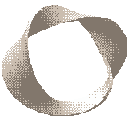

Jaromil's Musings

leave your comments
 printable page
printable page

Dyne.org is a non-profit effort lead by a grassroot committee of hackers dedicated to development of free and open source software for the freedom of expression.
Dyne.org appeared online in 2000 when the HasciiCam software was published: an invention widely appreciated for its artistic value and for making possible to broadcast live video using old hardware from a slow network connection.
Once upon a time dyne.org homepage consisted of its skin-like coloured background, the upper menu recited "korova, muse, ascii, proximity, theorema, timezones, conspire" while a transforming Moebius band decorated the center of the page, tagged with a quote from Gertrude Stein
|  |
| a rose is a rose is a rose is a rose is a rose |
Inspired by a mix of software and poetry, a growing network of developers released to the public software made to insure freedom of expression, configuring dyne.org as a free software atelier, a portal to Digital Creation and Media Art.
dyne.org software is redistributed by: Free Software Foundation (USA), Ircam, Centre Pompidou (FR), Vienna Univ. of Technology (AT), Providence Univ. Taichung (TW), Tecnhische Univ. Ilmenau (DE), Netherlands Unix User Group (NL), Instituto de Computação Uni de Campinas (BR), NIC Funet (FI), Heraklion University Crete (GR) W3Media Open Source Mirror (NL), Ibiblio public library and many others.
Ranging from radio makers, humanitarian organizations, video artists, medical researchers, media activists and educators, a large amount of people employed and redistributed dyne.org software worldwide, free of charge, echoing to the freedom spirit of this autonomous initiative.
Despite the fact in its early days (and until now) dyne.org was never boosted with merchandising or money, several young hackers pioneered the constitution of a wide horizontal network.
Openness, knowledge sharing and freedom of creation have been the philosophical principles guiding the evolution of dyne.org, hosting creations that have been conceptualised not for a profit, but for their role within society.
A young and displaced brotherhood of hackers, alchemists, radio amateurs, mathematicians and nomads.
The Freaknet is an on-site medialab, museum and poetry hacklab in the Mediterranean island of Sicily, surviving since 1994 the hostile environment of South Italian criminal administration and cultural repression.
The Hackmeeting is since 1998 the annual gathering of computer and reality hackers, an auto-organized TAZ inspired by people and projects at CCC, 2600, GNU and EFF.
Servus.at supported the birth of this digital community since the very beginning, hosting it in the digital space, offering solidarity and support for our on-line operations.
Our digital community is born from these on-site communities and even more on-line, in the past 8 years it gathered a wider international participation that interacts on software development and network cultures.
One dyne is the force required to cause a mass of one gram to accelerate at a rate of one centimeter per second squared in the absence of other force-producing effects.
A dyne is 1.000.000 times a newton.
The dyne measure has been established by Heraclitus, a greek philosopher born at Ephesus around 540 b.C., whom once also said that much learning does not teach understanding.
Panta rei
By using the term hacker we mean:
Grassroot is a spontaneous, non-hierarchical and passional way to participate and do things, which you can see as deeply different if not opposed to the Corporate way.
The fundamentals of this network are identities, defining themselves with and through their activity: dyne.org is not represented neither subsumes them. Each identity emerges by the code that has published.
Theory and practice can't be separated in our network of autonomous peers: while the participation is open, development tools and documentation are shared so that anyone can train independently to interact with others.
FOSS implies 4 fundamental freedoms: the freedom to run the program, for any purpose; the freedom to study how the program works, and adapt it to your needs; the freedom to redistribute copies so you can help your neighbour; the freedom to improve the program, and release your improvements to the public, so that the whole community benefits.
With the definition of Free and Open Source Software (FOSS) we refer to all software licensed and distributed under the GNU General Public License, as published by the Free Software Foundation. In fact, free has to be intended as "Libre", free as of speech, not simply gratis, coming with all possibilities to redistribute, modify and adapt the software without any fee.
We consider this total freedom (as in libre, not simply as in gratis) extremely important, as it leaves people autonomous in creating their own local economies to self sustain development efforts. Being free to modify, redistribute and even resell immaterial goods renders local efforts independent from neo-colonialist economies: players weakened by the global market can develop independently, still cooperating on a globally shared source base.
The reuse of old technology, the preservation of old computer and of our "digital past" (software, documentations and media supports) is for us a way to stop the unsustainable consumerist way of producing technology nowadays.
For our software creations we use programming techniques based on the GNU and BSD traditions of coding, which are carefully cultivated even by the youngest programmers of our community.
To promote the idea and practice of open source knowledge sharing within civil society: by fostering research, development, production and distribution of FOSS solutions.
To open the participation to on-line and on-site communities, leveraging the democratic and horizontal access to technology, lowering the economical requisites to its accessibility.
To foster employment of FOSS in artistic creation: exploring new forms of expression and interaction, disseminating new languages that can be freely adopted and re-elaborated by everyone, insuring the long term conservation of digital artworks.
To support FOSS development, also when non-profitable: being software a socially relevant media it should not be invented and maintained only on the basis of its merchantability.
The community of FOSS users still consists mostly of insiders, while the potential of the developed software has reached an outstanding quality that can improve computing tasks in a growing number of applications.
FOSS solutions offer a wider degree of freedom: software that can be adapted to specific needs and can evolve following the needs of the community of its users and developers.
Given the social relevance of software, it's an important strategic goal for dyne.org to provide FOSS based solutions, especially where software gets employed for communication, to enhance freedom of speech and expressive practices that are not depending from established powers and corporations.
Development should be aware of all environmental issues connected to it and, as such, keep the research focused, whenever possible, on recycling technical equipment that is already existing, develop environmental friendly systems, find ways to optimise the use of energy sources employed.
Who is benefitting? Since years our productions are employed successfully worldwide in cultural, independent as well commercial initiatives. Our user base counts thousands of people in every continent.

dyne:bolic GNU/Linux multimedia live CD is developed since 2001. As a 100% free operating system, this GNU/Linux distribution is among the few recommended by the Free Software Foundation. You can employ this live-CD without the need to install anything: the easiest installation ever.
dyne:bolic is an operating system shaped on the needs of media activists, artists and creatives as a practical tool for multimedia production: you can manipulate and broadcast both sound and video.
It is optimised to run on old computers, turning them into a full media stations: the minimum you need is a pentium 1 with 64Mb RAM and IDE CD-ROM, or even a game console.
It supports strong encryption for private data that can be carried around and flexibly employed on usb sticks.
Press reviews: Linux Journal 2007, Linux.com 2007, Sound on Sound 2006, Linux.com 2006, Slashdot 2006, ComputerWorld 2006, The Hindu 2006, OSNews 2004, Newsforge 2003, Slashdot 2003, Slashdot 2003, The Hindu 2003, ZDNet 2002.
dyne:bolic is part of the Linux Audio Consortium and has been nominated among the top 10 open source projects in 2005, in its lifespan this project has been redistributed by several magazines and publications all across the world, up to the realistic estimation of more than one million copies.
In our workshops and similar educational activities we enforce use of FOSS in communication and artistic creation: exploring new forms of expression and interaction, disseminating new languages that can be freely adopted and modified, ensuring to everyone the long term conservation of people's creations.
Concerning education, we believe that independence from commercial influences is crucial to not endorse or promote mercantile interests within public institutions.
The workshop consists in an hands-on experience employing GNU/Linux for digital artisanship and tactical media, exploring various ideas and practices of crafting and recycling technologies, to stimulate students towards the invention of novel forms of interactive computing and social networking.
Our museum consists of a collection of ancient computers, documentation, peripherals, calculators, manuals and software. When necessary we repair and fix broken hardware, the computers are setup working for the visitors (on-line and on-site) to experiment with them.
Our basic idea of an open source museum is to revert the classical museum structure where objects are "dead" under a glass table or in a closed shelf, to let people use and learn from them.
You are welcome to donate us working hardware: machines that we can test our software with, platforms that we can support, computers we can cluster and devices we can make use of.
Vintage hardware, even broken, can be still put in use, our museum is active for that.
If you have a hosting facility for internet services, you can help us making our software available in all the world by setting up a mirror.
You can use rsync(1) and crontab(P) to keep your mirror up to date with all the latest software we publish. Even if you don't know what this it is about, but still want to donate us bandwidth, please ask your system administrator to get in touch with us.
Even small donations can help us a lot, transactions are possible and easy via bank wiretransfer or Paypal.
Any money you will donate will go for a legal non-profit foundation and will be spent according to our goals and philosophy. More than one person is dedicating a life to these projects, your solidarity is welcome.
We would like to dedicate more time to development, to involve more people documenting and improving the software, as well to document all our activity.
THANKS, A THOUSAND FLOWERS WILL BLOSSOM!
For bug reports, please use our bug tracker.
If you like to join our community, subscribe our discussion lists.
For quick inquiries and questions you can use this contact form.
If you want to have fun with us :) have look in the Midgaard Square Market in Anatolia, just telnet anatolia.dyne.org 6001.
There is also IRC channel #dyne on irc.dyne.org where you can meet some of us if you have a reasonable tolerance to network and life latencies, jokes, cyber freaks and ascii pr0n ;)

|


|


|
 copyleft 2000 - 2009 dyne.org
foundation and respective authors. Verbatim copying
and distribution is permitted in any medium, provided
this notice is preserved.
Send inquiries & questions to dyne.org's hackers. copyleft 2000 - 2009 dyne.org
foundation and respective authors. Verbatim copying
and distribution is permitted in any medium, provided
this notice is preserved.
Send inquiries & questions to dyne.org's hackers.
|

|